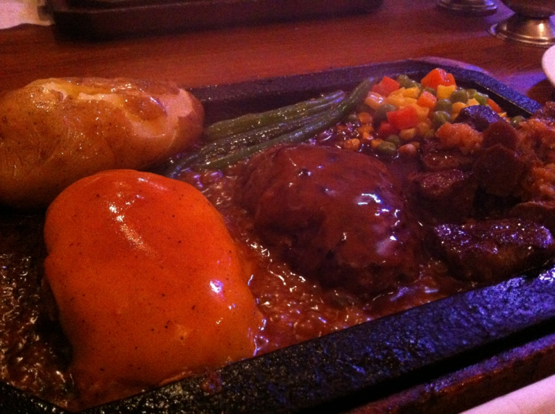
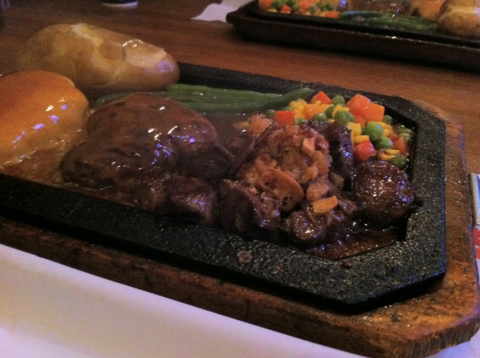

新宿で肉食った
公開日：
今月は勉強会続きで財政事情が厳しく、倹約生活が続いている。肉なんてもってのほかだ！ けれど、@shibayan が執拗に一緒に肉を食いに行きたいと言う。そこでしょうがなく、新宿まで食べに行ってあげた。ウソです。お肉食べたかったです。
ワイルドでアメリカンな感じのお店だった。

料理がきてその場でソースを掛けてもらうのだけど、そのときナプキンでカラダを防御するように指示される。でも、ナプキンをつまんでいる指先までは当然防御しきれなくて、
└( ^ω^ )┘ｱｰﾁｰﾁｰ└( ^ω^ )┘ｱｰﾁｰ♪
みたいな感じだった。

Nikon 1 V1 が入院中で、 iPhone だと美味しそうに撮れないのが残念*1。 @shibayan の婚約自慢を聞きながら、ワイルドでアメリカンなステーキ＆ハンバーグを美味しくいただいた。わしもそろそろこの東京砂漠から抜けだして、離島みたいなところでのんびり幸せに暮らしたい。
とつぶやいてみたところ……
つ四国 RT @daruyanagi どこか俺なんかでも移住していい離島とかないかなぁ
— なかじ＠松山．愛媛さん (@nakaji) 9月 6, 2012四国の人って案外自虐キャラが多い気がする。
*1:お店の中がちょっと暗いんだよね